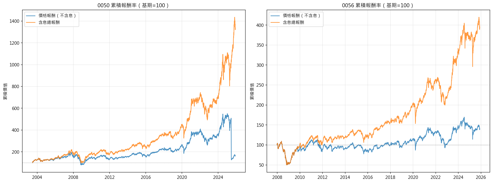
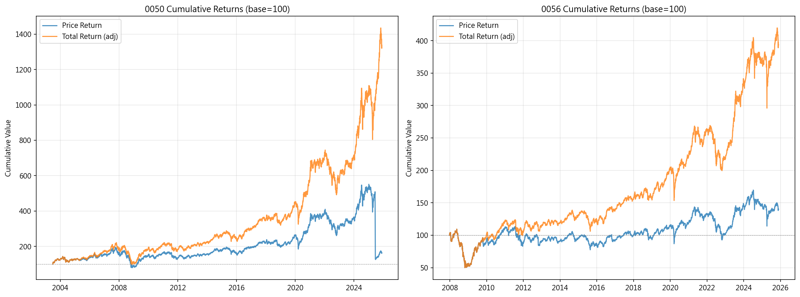
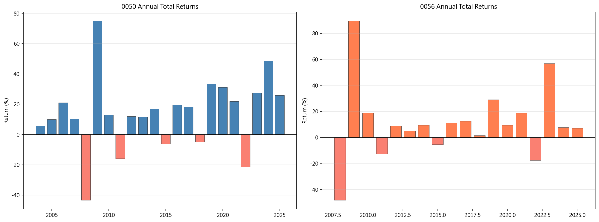
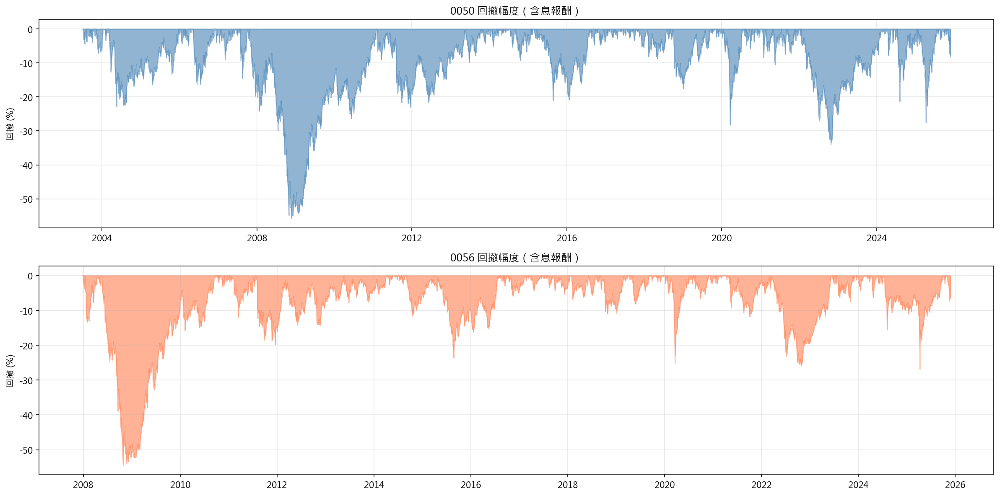
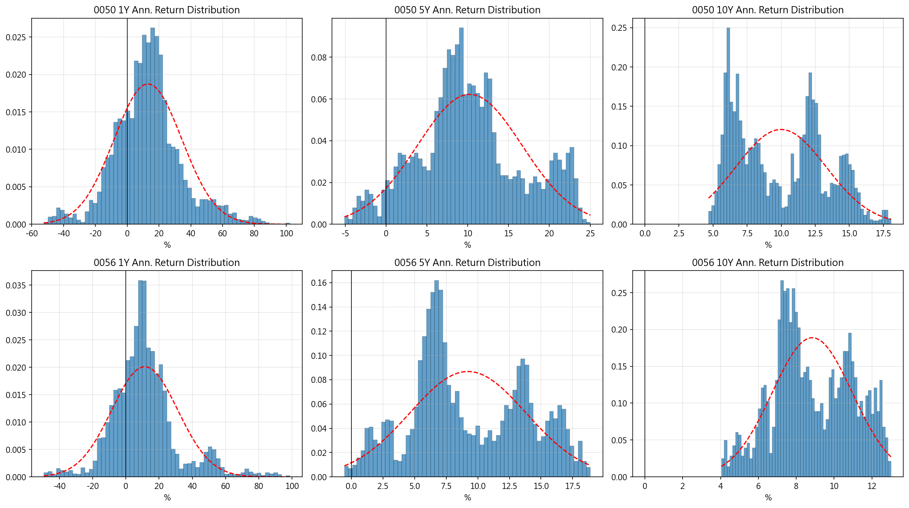
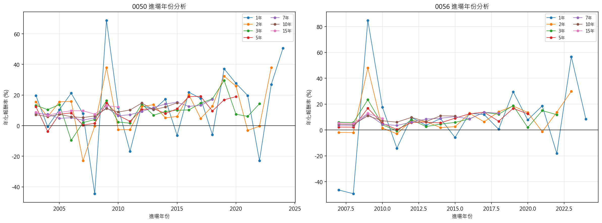
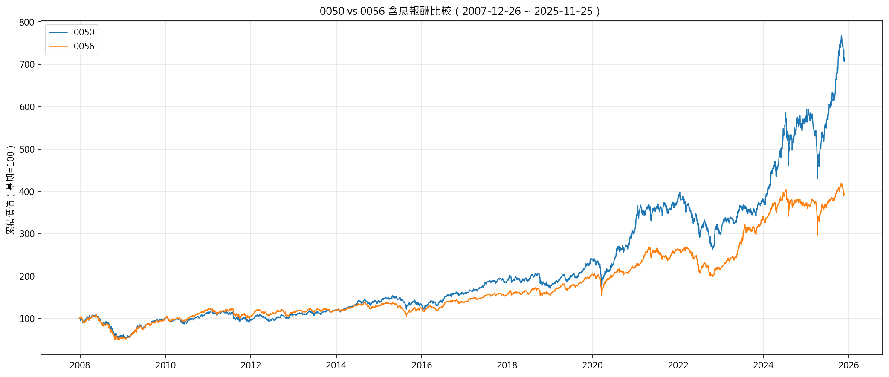
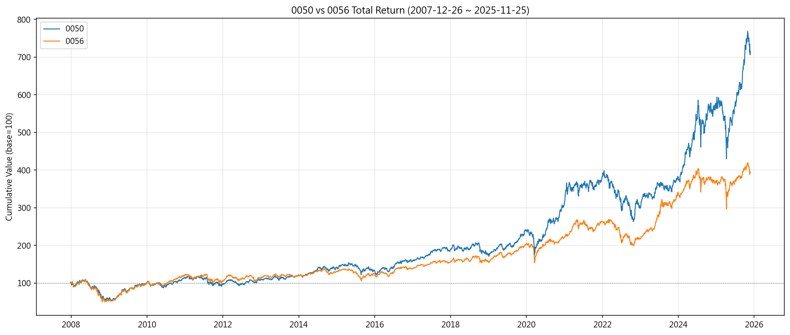

3. 實證結果3. Results
3.1 績效摘要3.1 Performance Summary
下表彙整 0050 與 0056 在不同持有期間的績效指標。最關鍵的指標是勝率（正報酬比例）：0050 持有 1 年勝率為 74.8%，3 年提升至 93.5%，7 年以上達到 100%。值得注意的是，平均年化報酬隨持有期間拉長而略降（從 1 年的 12.6% 降至 10 年的 9.9%），這是因為極端正報酬在長期持有中被平均化——但報酬的離散度也同時大幅縮小。
The table below summarizes performance metrics for 0050 and 0056 across different holding periods. The most critical metric is the win rate (proportion of positive returns): 0050's 1-year win rate is 74.8%, rising to 93.5% at 3 years, and reaching 100% at 7+ years. Note that mean annualized returns decline slightly with longer periods (from 12.6% at 1Y to 9.9% at 10Y) as extreme positive returns get averaged out — but return dispersion also narrows substantially.
| 標的 | 年數 | 樣本數 | 勝率 | 平均年化 | 中位年化 | 最低年化 | 最高年化 |
|---|---|---|---|---|---|---|---|
| 50 | 1 | 5265 | 74.8% | 12.6% | 12.3% | -52.6% | 101.6% |
| 50 | 2 | 5013 | 83.8% | 11.4% | 9.1% | -24.0% | 48.3% |
| 50 | 3 | 4761 | 93.5% | 10.5% | 10.5% | -11.5% | 36.8% |
| 50 | 5 | 4257 | 94.8% | 10.2% | 9.5% | -5.2% | 24.9% |
| 50 | 7 | 3753 | 100.0% | 10.1% | 9.3% | 2.4% | 21.3% |
| 50 | 10 | 2997 | 100.0% | 9.9% | 9.7% | 4.6% | 18.0% |
| 50 | 15 | 1737 | 100.0% | 10.0% | 9.5% | 6.0% | 16.8% |
| 56 | 1 | 4151 | 74.6% | 10.9% | 9.3% | -49.5% | 98.0% |
| 56 | 2 | 3899 | 89.2% | 10.6% | 8.6% | -7.2% | 53.0% |
| 56 | 3 | 3647 | 98.0% | 9.5% | 8.8% | -2.7% | 31.5% |
| 56 | 5 | 3143 | 99.5% | 9.1% | 7.9% | -0.6% | 18.8% |
| 56 | 7 | 2639 | 100.0% | 8.8% | 8.5% | 2.4% | 15.8% |
| 56 | 10 | 1883 | 100.0% | 8.8% | 8.5% | 4.0% | 13.0% |
| 56 | 15 | 623 | 100.0% | 10.1% | 9.7% | 5.8% | 14.3% |
| Ticker | Years | N | Win Rate | Mean Ann. | Median Ann. | Min Ann. | Max Ann. |
|---|---|---|---|---|---|---|---|
| 50 | 1 | 5265 | 74.8% | 12.6% | 12.3% | -52.6% | 101.6% |
| 50 | 2 | 5013 | 83.8% | 11.4% | 9.1% | -24.0% | 48.3% |
| 50 | 3 | 4761 | 93.5% | 10.5% | 10.5% | -11.5% | 36.8% |
| 50 | 5 | 4257 | 94.8% | 10.2% | 9.5% | -5.2% | 24.9% |
| 50 | 7 | 3753 | 100.0% | 10.1% | 9.3% | 2.4% | 21.3% |
| 50 | 10 | 2997 | 100.0% | 9.9% | 9.7% | 4.6% | 18.0% |
| 50 | 15 | 1737 | 100.0% | 10.0% | 9.5% | 6.0% | 16.8% |
| 56 | 1 | 4151 | 74.6% | 10.9% | 9.3% | -49.5% | 98.0% |
| 56 | 2 | 3899 | 89.2% | 10.6% | 8.6% | -7.2% | 53.0% |
| 56 | 3 | 3647 | 98.0% | 9.5% | 8.8% | -2.7% | 31.5% |
| 56 | 5 | 3143 | 99.5% | 9.1% | 7.9% | -0.6% | 18.8% |
| 56 | 7 | 2639 | 100.0% | 8.8% | 8.5% | 2.4% | 15.8% |
| 56 | 10 | 1883 | 100.0% | 8.8% | 8.5% | 4.0% | 13.0% |
| 56 | 15 | 623 | 100.0% | 10.1% | 9.7% | 5.8% | 14.3% |
0056 的勝率走勢與 0050 類似（1 年 74.6%、5 年 99.5%），但平均年化報酬略低於 0050。這符合高股息 ETF 的特性：犧牲部分資本成長以換取較穩定的現金流。
0056's win rate trend is similar to 0050 (74.6% at 1Y, 99.5% at 5Y), but with slightly lower mean annualized returns. This is consistent with the characteristics of dividend-focused ETFs: trading some capital growth for more stable cash flows.
上方互動圖清楚展示勝率隨持有期間遞增的趨勢。兩檔 ETF 在 7 年處均達到 100% 勝率（灰色虛線為 50% 基準線，綠色虛線為 100%）。在 1-3 年的短期持有區間，仍有約 25%–7% 的機率出現虧損——這是「一定賺」論述最脆弱的環節。
The interactive chart above clearly shows the upward trend of win rates with holding period. Both ETFs reach 100% at the 7-year mark (gray dashed line = 50% baseline, green = 100%). In the 1-3 year short-term range, there is still a 25%–7% probability of losses — this is where the 'guaranteed profit' claim is most vulnerable.
3.2 假說檢定（第一層：名目報酬 > 0）3.2 Hypothesis Tests (Layer 1: Nominal Return > 0)
下表為 Newey-West HAC 單尾 t 檢定結果（H₀: mean ≤ 0），檢驗各持有期間的平均年化報酬是否顯著大於零。
The table below presents Newey-West HAC one-tailed t-test results (H₀: mean ≤ 0), testing whether mean annualized returns are significantly positive for each holding period.
| 標的 | 年數 | 平均值 | NW t統計量 | p 值 | Cohen's d | BS CI下界 | BS CI上界 |
|---|---|---|---|---|---|---|---|
| 50 | 1 | 0.1264 | 3.6154 | 0.0001 | 0.5958 | 0.0587 | 0.1951 |
| 50 | 2 | 0.2584 | 4.6401 | 0.0000 | 0.8704 | 0.1510 | 0.3664 |
| 50 | 3 | 0.3654 | 5.5383 | 0.0000 | 1.3316 | 0.2379 | 0.4942 |
| 50 | 5 | 0.6785 | 3.8706 | 0.0001 | 1.3697 | 0.4057 | 0.9677 |
| 50 | 7 | 1.0216 | 3.9650 | 0.0000 | 1.8012 | 0.6590 | 1.3917 |
| 50 | 10 | 1.6894 | 4.7630 | 0.0000 | 2.0451 | 1.4127 | 1.9651 |
| 50 | 15 | 3.4483 | 9.8269 | 0.0000 | 2.0819 | NaN | NaN |
| 56 | 1 | 0.1094 | 3.2488 | 0.0006 | 0.5530 | 0.0449 | 0.1806 |
| 56 | 2 | 0.2337 | 4.7112 | 0.0000 | 0.9663 | 0.1411 | 0.3335 |
| 56 | 3 | 0.3253 | 5.7426 | 0.0000 | 1.4826 | 0.2068 | 0.4332 |
| 56 | 5 | 0.5758 | 4.8984 | 0.0000 | 1.7254 | 0.3652 | 0.7772 |
| 56 | 7 | 0.8437 | 5.3792 | 0.0000 | 2.1872 | 0.6419 | 1.0477 |
| 56 | 10 | 1.3649 | 13.0681 | 0.0000 | 2.9753 | NaN | NaN |
| 56 | 15 | 3.3871 | 34.2676 | 0.0000 | 2.6563 | NaN | NaN |
| Ticker | Years | Mean | NW t-stat | p-value | Cohen's d | BS CI Low | BS CI High |
|---|---|---|---|---|---|---|---|
| 50 | 1 | 0.1264 | 3.6154 | 0.0001 | 0.5958 | 0.0587 | 0.1951 |
| 50 | 2 | 0.2584 | 4.6401 | 0.0000 | 0.8704 | 0.1510 | 0.3664 |
| 50 | 3 | 0.3654 | 5.5383 | 0.0000 | 1.3316 | 0.2379 | 0.4942 |
| 50 | 5 | 0.6785 | 3.8706 | 0.0001 | 1.3697 | 0.4057 | 0.9677 |
| 50 | 7 | 1.0216 | 3.9650 | 0.0000 | 1.8012 | 0.6590 | 1.3917 |
| 50 | 10 | 1.6894 | 4.7630 | 0.0000 | 2.0451 | 1.4127 | 1.9651 |
| 50 | 15 | 3.4483 | 9.8269 | 0.0000 | 2.0819 | NaN | NaN |
| 56 | 1 | 0.1094 | 3.2488 | 0.0006 | 0.5530 | 0.0449 | 0.1806 |
| 56 | 2 | 0.2337 | 4.7112 | 0.0000 | 0.9663 | 0.1411 | 0.3335 |
| 56 | 3 | 0.3253 | 5.7426 | 0.0000 | 1.4826 | 0.2068 | 0.4332 |
| 56 | 5 | 0.5758 | 4.8984 | 0.0000 | 1.7254 | 0.3652 | 0.7772 |
| 56 | 7 | 0.8437 | 5.3792 | 0.0000 | 2.1872 | 0.6419 | 1.0477 |
| 56 | 10 | 1.3649 | 13.0681 | 0.0000 | 2.9753 | NaN | NaN |
| 56 | 15 | 3.3871 | 34.2676 | 0.0000 | 2.6563 | NaN | NaN |
所有持有期間在 Holm-Bonferroni 校正後，平均報酬均為統計顯著正值（校正後 p < 0.05）。Cohen's d 效果量從 1 年的 0.60（中等效果）增長至 3 年的 1.33（極大效果），顯示不僅統計顯著，且具有實質經濟意義。Bootstrap 95% 信賴區間均不包含零，進一步支持結論的穩健性。
All holding periods show statistically significant positive mean returns after Holm-Bonferroni correction (adjusted p < 0.05). Cohen's d effect sizes grow from 0.60 (medium) at 1 year to 1.33 (very large) at 3 years, indicating not just statistical significance but also practical economic significance. Bootstrap 95% confidence intervals exclude zero across the board, further supporting the robustness of the conclusions.
3.3 累積報酬3.3 Cumulative Returns
累積報酬圖呈現「價格報酬」（不含息）與「含息總報酬」的巨大差距。0050 的含息報酬終值約為價格報酬的 8.2 倍，這意味著投入 100 萬元在 0050 成立時，至今含息價值約 1338 萬元，但如果只看價格（不含息），僅約 163 萬元——股息再投入貢獻了將近一半的長期累積報酬。投資人若只看價格走勢，將嚴重低估實際報酬。
圖中可見數次重大回檔事件：2008 年金融海嘯（最深回檔，含息跌幅超過 50%）、2011 年歐債危機（約 20-25%）、2015 年中國股災（約 15%）、2018 年中美貿易戰（約 15-20%）、2020 年 COVID-19（約 30%，但恢復最為迅速，僅約 5 個月即收復失土）。值得注意的是，每一次重大下跌之後，市場都創出新高——這正是長期持有策略的核心邏輯所在。但投資人必須有耐心和紀律在最黑暗的時刻繼續持有。
The cumulative return chart reveals the dramatic gap between price-only returns and total returns (with dividends). 0050's total return ending value is approximately 8.2x its price-only return. This means an initial investment of NT$1 million at 0050's inception would be worth approximately NT$13380,000 with dividends reinvested, but only NT$1630,000 looking at price alone — dividend reinvestment contributed nearly half of long-term cumulative returns. Investors who only watch price movements will significantly underestimate actual performance.
The chart shows several major drawdown events: the 2008 financial crisis (deepest drawdown, over 50% total-return decline), 2011 European debt crisis (~20-25%), 2015 China stock crash (~15%), 2018 US-China trade war (~15-20%), and 2020 COVID-19 (~30%, but recovered most quickly in about 5 months). Notably, after every major decline, the market went on to make new highs — this is the core logic behind buy-and-hold strategy. However, investors must have the patience and discipline to hold through the darkest moments.
3.4 年度報酬3.4 Annual Returns
年度報酬率柱狀圖提供了比累積報酬圖更直覺的視角——每一根柱子代表該年度從年初持有到年底的含息報酬率。0050 在大多數年份繳出正報酬，但也有數年出現顯著虧損（最明顯的是 2008 年，年度跌幅超過 40%）。0056 的年度波動幅度一般小於 0050，反映其高股息策略的防禦特性——股息收入在市場下跌時提供緩衝，但也限制了上漲年份的報酬空間。
仔細觀察可以發現一個重要模式：大跌的年份通常緊接著大漲的年份（如 2008 大跌後 2009 強力反彈），這就是均值回復的體現。若投資人在 2008 年底恐慌出清，就會錯過 2009 年的強勁反彈——這是行為金融學中「損失趨避」(loss aversion) 導致的典型錯誤。另外值得注意的是，正報酬年份的數量明顯多於負報酬年份，符合股票長期正期望報酬的基本特性。
The annual return bar chart provides a more intuitive perspective than cumulative returns — each bar represents the total return from holding from the beginning to end of that year. 0050 posted positive returns in most years, but also experienced significant losses in some years (most notably 2008, with annual declines exceeding 40%). 0056 generally shows smaller annual fluctuations than 0050, reflecting the defensive nature of its high-dividend strategy — dividend income provides a cushion during declines but also caps returns in up years.
A careful examination reveals an important pattern: years of large declines are typically followed by strong recovery years (e.g., a powerful rebound in 2009 after the 2008 crash). This is mean reversion in action. If an investor panic-sold at the end of 2008, they would have missed 2009's strong recovery — a classic error driven by 'loss aversion' in behavioral finance. Also noteworthy is that positive-return years significantly outnumber negative ones, consistent with the fundamental property of positive expected equity returns over the long term.
3.5 回檔分析3.5 Drawdown Analysis
回檔圖是理解長期持有「心理代價」的關鍵視覺化工具。即使長期報酬為正，持有過程中投資人可能面臨嚴重的帳面虧損。0050 的歷史最大回檔為 -55.7%（2008 年金融海嘯期間），0056 則為 -54.4%。這意味著如果你在最不幸的時點投入 100 萬元，帳面上最多可能只剩不到 50 萬元。
主要回檔事件包括：2008 年金融海嘯（最深回檔，恢復期約 3-4 年）、2011 年歐債危機（回檔約 20%，恢復期約 1 年）、2020 年 COVID-19（回檔約 30%，但恢復速度空前——僅約 5 個月）、2022 年全球升息（回檔約 25-30%，恢復期約 1-2 年）。回檔是長期持有策略最大的心理考驗——行為金融研究顯示，等額的損失帶來的痛苦感約為獲利快樂感的 2-2.5 倍（Kahneman & Tversky, 1979 前景理論），因此投資人在 40% 回檔中的焦慮感遠超 40% 獲利時的愉悅感，這導致許多人在底部恐慌賣出。
The drawdown chart is the key visualization for understanding the 'psychological cost' of long-term holding. Even when long-term returns are positive, investors may face severe paper losses along the way. 0050's historical maximum drawdown was -55.7% (during the 2008 financial crisis), while 0056 reached -54.4%. This means if you invested NT$1 million at the worst possible time, your account could have dropped below NT$500,000 on paper.
Major drawdown events include: the 2008 financial crisis (deepest drawdown, ~3-4 year recovery), 2011 European debt crisis (~20% drawdown, ~1 year recovery), 2020 COVID-19 (~30% drawdown, but unprecedented recovery speed — only ~5 months), and the 2022 global rate hikes (~25-30% drawdown, ~1-2 year recovery). Drawdowns are the greatest psychological challenge of buy-and-hold strategies — behavioral finance research shows that losses produce roughly 2-2.5x the pain of equivalent gains' pleasure (Kahneman & Tversky, 1979 Prospect Theory), so the anxiety from a 40% drawdown far exceeds the joy from a 40% gain, causing many investors to panic-sell at the bottom.
3.6 滾動績效3.6 Rolling Performance
上方的互動圖展示 5 年滾動年化報酬，可將滑鼠移至曲線上查看各時點的精確數值。0050 與 0056 的 5 年滾動報酬大部分時間集中在 5-15% 之間，但在 2003-2008 年間（包含金融海嘯）出現較大波動。值得注意的是，即使是最差的 5 年期（涵蓋 2008 年崩盤的窗口），兩檔 ETF 的年化報酬仍多為正值或僅微幅負值，顯示 5 年持有期間已能大幅降低虧損風險。
The interactive chart above shows 5-year rolling annualized returns — hover over the curves to see precise values at each point. Both 0050 and 0056's 5-year rolling returns cluster mostly between 5-15%, with greater volatility during 2003-2008 (which includes the financial crisis). Notably, even during the worst 5-year windows (those encompassing the 2008 crash), both ETFs' annualized returns were mostly positive or only marginally negative, demonstrating that a 5-year horizon substantially reduces loss risk.
上方的 PNG 靜態圖同時展示 1 年、3 年、5 年與 10 年四種持有期間的滾動報酬。關鍵觀察：(1) 持有期間越長，曲線越平滑，波動越小——1 年滾動報酬劇烈震盪於 -50% 到 +80% 之間，但 10 年滾動報酬收斂至 5%-15% 的窄帶，這就是統計學上「均值回復」與「大數法則」在投資上的直觀體現；(2) 長期持有曲線幾乎全在零軸上方，與勝率接近 100% 的結論一致；(3) 即使是 10 年期，不同進場時點仍有 18.0% vs 4.6% 的差異，顯示「進場時機無所謂」的說法不完全正確——它「影響較小」但並非「完全不重要」。
從 0050 與 0056 的比較來看，兩者在短期（1 年）的走勢高度相關，但在長期（5-10 年）中 0050 通常略高於 0056，反映 0050 受惠於台積電等成長型權值股的資本增值優勢。這個差距在半導體產業蓬勃發展的 2019-2024 年間尤為明顯。
The static PNG chart above simultaneously displays 1-year, 3-year, 5-year, and 10-year rolling returns. Key observations: (1) Longer holding periods produce smoother, less volatile curves — 1-year rolling returns swing wildly between -50% and +80%, while 10-year returns converge to a narrow 5%-15% band, a direct visual demonstration of 'mean reversion' and the 'law of large numbers' in investing; (2) Long-term curves remain almost entirely above zero, consistent with near-100% win rates; (3) Even at 10 years, different entry points show a 18.0% vs 4.6% spread, suggesting that 'timing doesn't matter' is not entirely true — it matters less, but is not completely irrelevant.
Comparing 0050 and 0056, the two track closely in the short term (1 year) but 0050 typically runs slightly higher in long-term (5-10 year) rolling returns, reflecting 0050's capital appreciation advantage from growth-oriented heavyweights like TSMC. This gap becomes especially evident during 2019-2024 when the semiconductor industry flourished.
3.7 報酬分佈3.7 Return Distributions
報酬率分佈圖（直方圖）是本研究最具資訊量的圖表之一，清楚呈現持有期間增長帶來的三個效應：(1) 分佈中心穩定為正——0050 一年期均值約 12.6%，中位數約 12.3%，5 年期中位數約 9.5%；(2) 左尾大幅縮短——1 年期第 5 百分位數（P5，即 95% 的情況優於此值）為 -18.9%，5 年期 P5 提升至 -0.1%，尾端風險隨時間顯著收斂；(3) 分佈偏離常態——紅色虛線為常態分佈擬合，實際分佈在 1 年期明顯呈左偏（負偏態），顯示大跌的機率高於常態假設，但隨持有期間增長逐漸對稱化。
這個發現具有重要的方法論意義：由於短期報酬分佈偏離常態且具厚尾，傳統的參數式推論（假設常態分佈）可能低估風險。這正是我們選用區塊拔靴法（不假設任何分佈形式）來建構信賴區間的原因——讓數據本身說話，而非強加分佈假設。0056 的分佈形態與 0050 類似，但整體略向左偏移，反映其略低的長期平均報酬。
The return distribution charts (histograms) are among the most informative in this study, clearly showing three effects of increasing holding period: (1) Distribution center remains positive — 0050's 1-year mean is ~12.6%, median ~12.3%, 5-year median ~9.5%; (2) The left tail shrinks dramatically — the 1-year 5th percentile (P5, meaning 95% of outcomes are better) is -18.9%, rising to -0.1% at 5 years, showing that tail risk converges significantly over time; (3) Distributions deviate from normality — the red dashed line shows the normal fit, and actual 1-year distributions are visibly left-skewed (negative skewness), meaning crashes are more likely than a normal distribution implies, but distributions become more symmetric at longer horizons.
This finding has important methodological implications: since short-term return distributions are non-normal with fat tails, traditional parametric inference (assuming normality) may underestimate risk. This is precisely why we chose block bootstrap methods (assuming no particular distribution) for constructing confidence intervals — letting the data speak for itself rather than imposing distributional assumptions. 0056's distribution shape is similar to 0050 but shifted slightly left overall, reflecting its slightly lower long-term average returns.
3.8 進場年份分析3.8 Vintage Year Analysis

進場年份（Vintage Year）分析是本研究中最接近「真實投資決策」的視角——它模擬投資人在每年年初投入一筆資金後持有 N 年的實際報酬。每條線代表不同的持有期間（1 年、3 年、5 年、10 年等），每個資料點代表該年進場的投資人實際獲得的年化報酬率。
圖中可以觀察到三個重要模式：(1) 最差進場年份如 2007-2008 年（金融海嘯前高點），短期（1-3 年）報酬極差，但持有 7 年以上仍可轉正——這是「時間治癒一切」論述最有力的證據；(2) 最佳進場年份如 2008 年底至 2009 年初（底部附近），各期間報酬都非常亮眼——這提醒投資人，市場最悲觀的時刻往往是最佳買點；(3) 持有期間越長，各年度線條越收斂，不同年份進場的 10 年期報酬差距遠小於 1 年期——長期持有確實能有效削弱進場時機的影響。
這張圖也揭示了「存股論述」的最大盲點：如果投資人在 2007 年高點進場持有 1-2 年，將面臨超過 40% 的虧損。許多投資人在這種情境下會選擇「停損」出場，而非繼續持有——但如果他們能堅持到 7 年以上，歷史上確實能轉為獲利。問題在於：能否在最黑暗的時刻堅持不動搖？
The vintage year analysis provides the perspective closest to 'real investment decisions' in this study — it simulates the actual returns of an investor who puts in a lump sum at the start of each year and holds for N years. Each line represents a different holding period (1, 3, 5, 10 years, etc.), and each data point shows the annualized return actually earned by someone who entered in that year.
Three key patterns emerge: (1) Worst entry years like 2007-2008 (pre-financial crisis peak) show terrible short-term (1-3 year) returns, but holding for 7+ years still turns positive — this is the strongest evidence for the 'time heals all' thesis; (2) Best entry years like late 2008 to early 2009 (near the bottom) show excellent returns across all periods — a reminder that the market's most pessimistic moments are often the best entry points; (3) Lines converge with longer holding periods, with the spread in 10-year returns across entry years far smaller than for 1-year returns — long-term holding genuinely dampens the impact of entry timing.
This chart also reveals the biggest blind spot in the 'just buy and hold' narrative: investors entering at the 2007 peak and holding for 1-2 years would have faced losses exceeding 40%. Many investors in this situation would choose to 'cut losses' and exit rather than continue holding — but if they had persisted for 7+ years, history shows they would have turned profitable. The question is: can you remain steadfast in the darkest moments?
3.9 0050 vs 0056 比較3.9 0050 vs 0056 Comparison
0050 與 0056 的直接比較（自 0056 上市日起算的共同期間）。0050 的含息累積報酬明顯高於 0056——這主要源於 0050 追蹤台灣前 50 大市值公司（如台積電），受惠於資本增值；而 0056 以高股息選股，犧牲部分資本成長以換取較高的現金殖利率。兩者各有優勢：0050 適合追求長期資本增值的投資人，0056 適合需要穩定現金流的投資人。從長期持有的角度來看，兩者都達到了 7 年 100% 勝率的門檻。
A direct comparison of 0050 and 0056 over their common period (since 0056's listing date). 0050's cumulative total return is noticeably higher — mainly because 0050 tracks Taiwan's top 50 companies by market cap (including TSMC), benefiting from capital appreciation; while 0056 selects stocks based on high dividend yields, trading some capital growth for higher cash yield. Each has its merits: 0050 suits investors seeking long-term capital growth, while 0056 suits those needing stable cash flow. From a long-term holding perspective, both achieve the 100% win rate threshold at the 7-year mark.